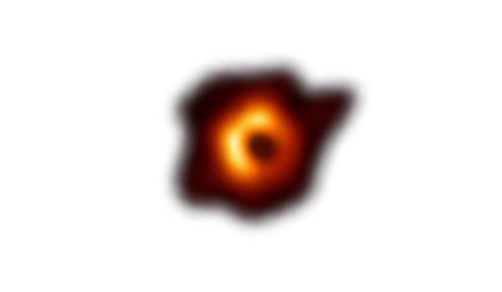

*Not visualising accretion disk
*More visible than in real
life
*Not visualising accretion disk
*More visible than in real
life
Stars orbitting the black hole in the center of our galaxy (Sagittarius A*)
This is a timelapse of 20 years worth of data collected using the Very Large Telescope (VLT) by European Southern Observatory (ESO)
Original video